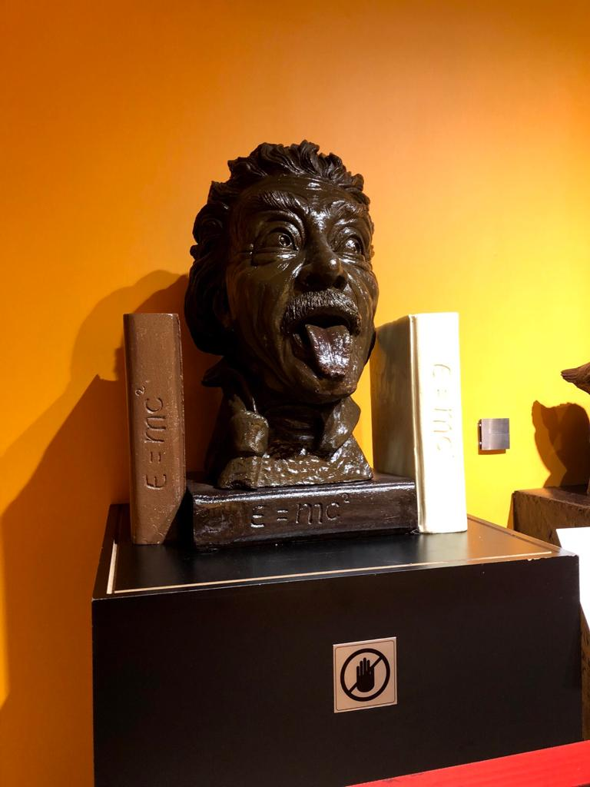

The Rich Culture of Turkey
Background About Turkey:
Turkey has always been a sought after location by many countires in the past. From Ancinet Rome, to the Ottomans everyone wanted to conquer it. Specificly due to Istanbul and it's location. Istanbul is rich of religious landmarks, most notibly Hagia Sophia, Sultan Ahmed Mosque and The Blue Mosque. All these locations are rich in history and detailed art that is beautiful. The magical sense of wonder when you are at these locations witnessing the beautiy of it. There's a chocolate factory museam that I visited where they put a portraits of all their previous rulers and the time they ruled in the past. They also have a chocolate statue of Albert Einstein head that looks very realistic. Inside of the chocolate museam lies many statues of historical figures, there was a whole scene of the Ark of Noah which depects what happened in the story all made by chocolate. Additionally, they also have figures of the religious landmarks, and cities structures in Turkey that are also made by chocolate.
Art of Turkey
Turkey has very beautiful art and architecutre that it is unbelievable that these were made decades ago, and not recently. Though they get upkept so they don't deteriorate, the past work is still very present in the building and art. The artwork is very intricate and detailed when you look at it up close, the amount of detail and effort that was made while creating these pieces of art is amazing. Same thing with the architecutre of the mosques, how they were created decades ago yet the work that has been put into them and artwork that decorate the walls and ceiling is astounding. I was very inspired after visitng those areas because the art shown there is timeless and will always remaing timeless till the end of time. Even the paintings have stones used with the paint, those small details that they have that create masterpieces that will never go out of style. It is no wonder why it is a tourist hotspot due to it's beauty.